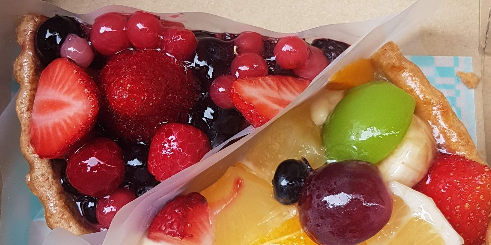
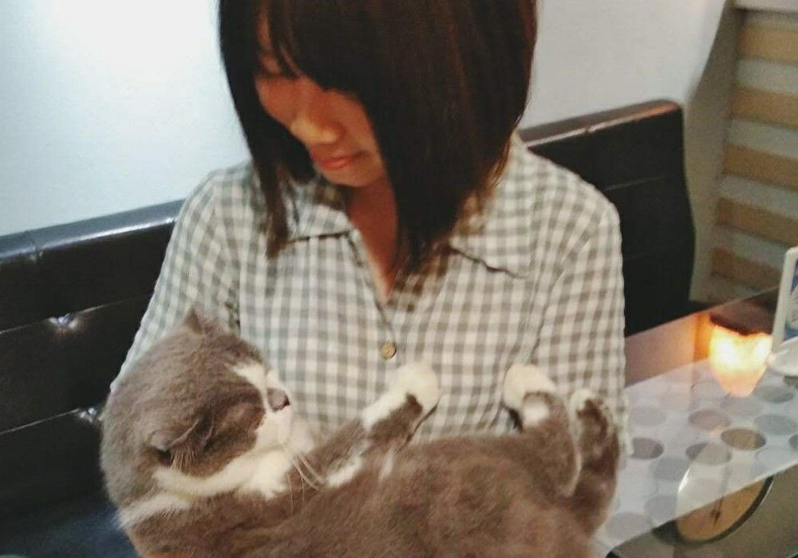
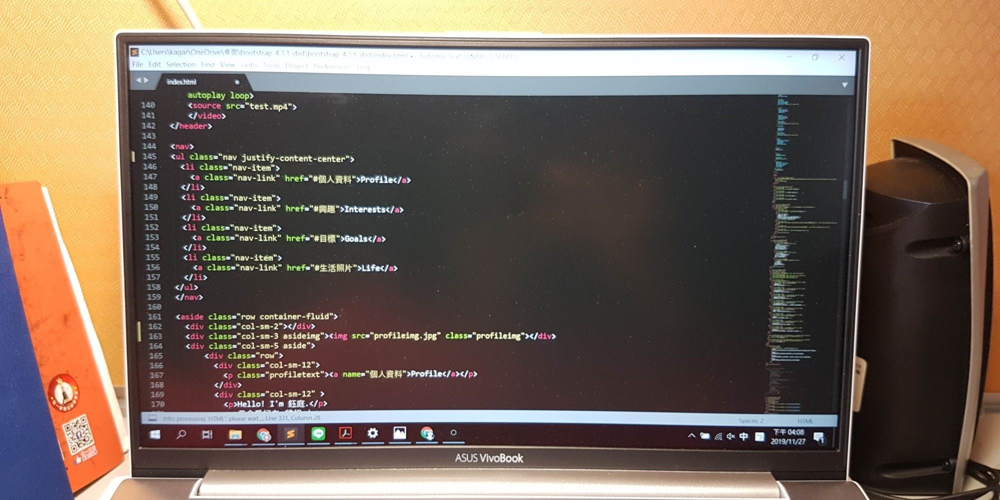
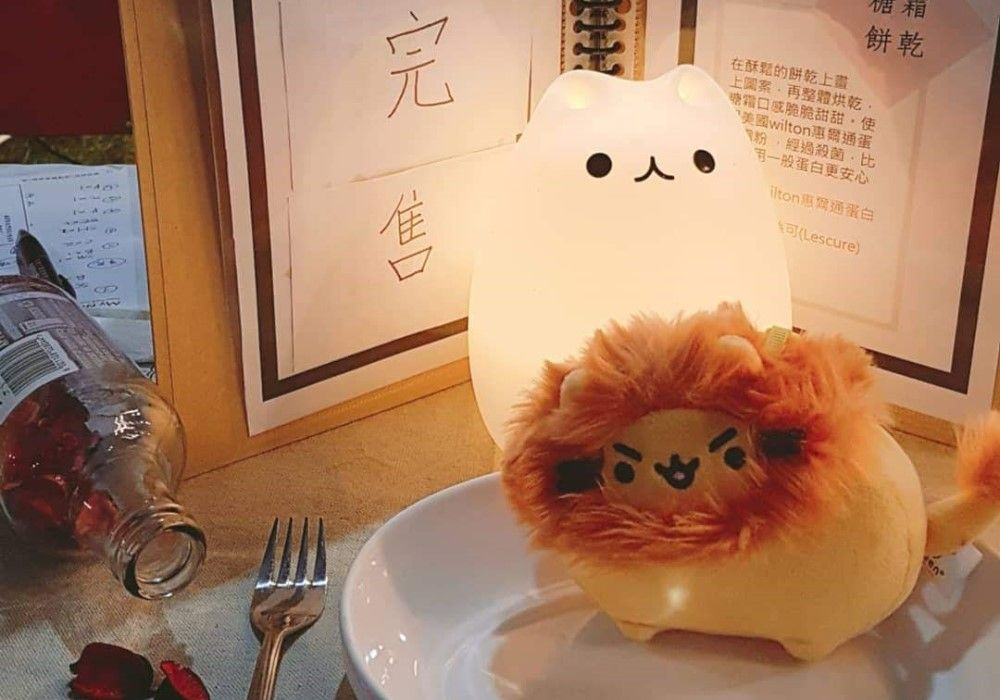
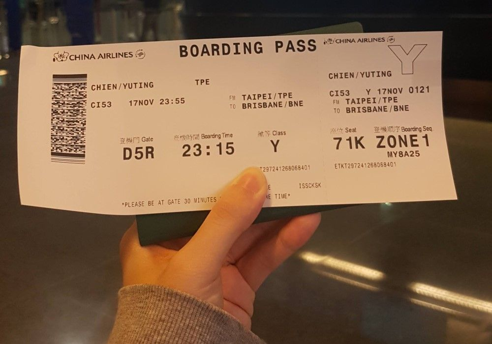

1.考日文檢定至N2
1.考日文檢定至N2

2.到日本學習甜點

3.養很多貓

4.往前端或app開發發展

5.再次於中原藝術節擺攤

6.多益800分以上
做甜點:
除了吃以外,我也非常喜歡做甜點,先前有辦過簡單的甜點教學活動,希望之後能更精進,真的開一間甜點教室
看電影:
劇情類是我的最愛,看完電影後我會去看影評解析,以更了解作者想表達的意象
讀小說:
我喜歡看奇幻與懸疑的小說,像是布蘭登．山德森,尼爾．蓋曼的作品,除此之外也喜歡閱讀詩集
看動畫:
現在比較少看動畫,喜歡的類型是有特別世界觀,或者探討某些議題的
這是我第一次看到雪！希望之後能去更多雪的地方玩
因為爸爸工作的關係，我有許多機會出國看看。
我喜歡自己排行程，旅行就是要自由的玩！
Japan,Vietnam,Indonesia,Hong Kong,Australia
和朋友參加浴衣體驗，雖然腰束的很緊還是去吃了勝烈亭豬排，真的非常好吃
第一次擺攤賣甜點，雖然天氣不佳，但還是有許多人來現場支持我
These People Ought to Know Who We Are and Tell That We Were Here.
常常尋找好吃甜點的我
Heart made of glass, my mind of stone
黃金海岸的沙子真的很細很白，太陽曬過暖暖的很舒服